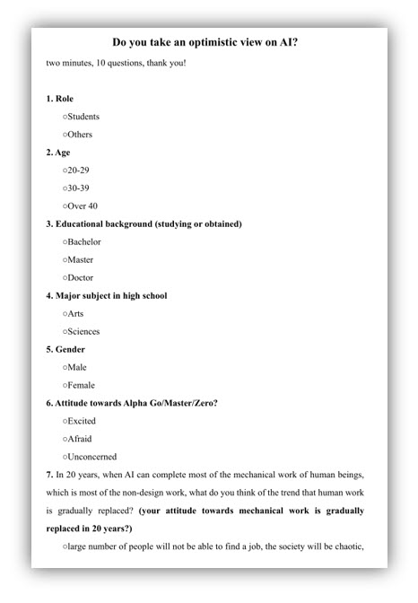

People’s Attitudes Towards
Artificial Intelligence
2018-12-24 English Term Project
Zhang Yue Su Huaixing Zhang Yun
Introduction
AlphaZero
Methodology

Questionaire 86 people
Respondents
Respondents
Respondents
Respondents
Respondents
Attitudes
Attitudes
Attitudes
Attitudes
Attitudes
Welcome to the Future!
View Report (PDF)
View Questionaire (PDF)